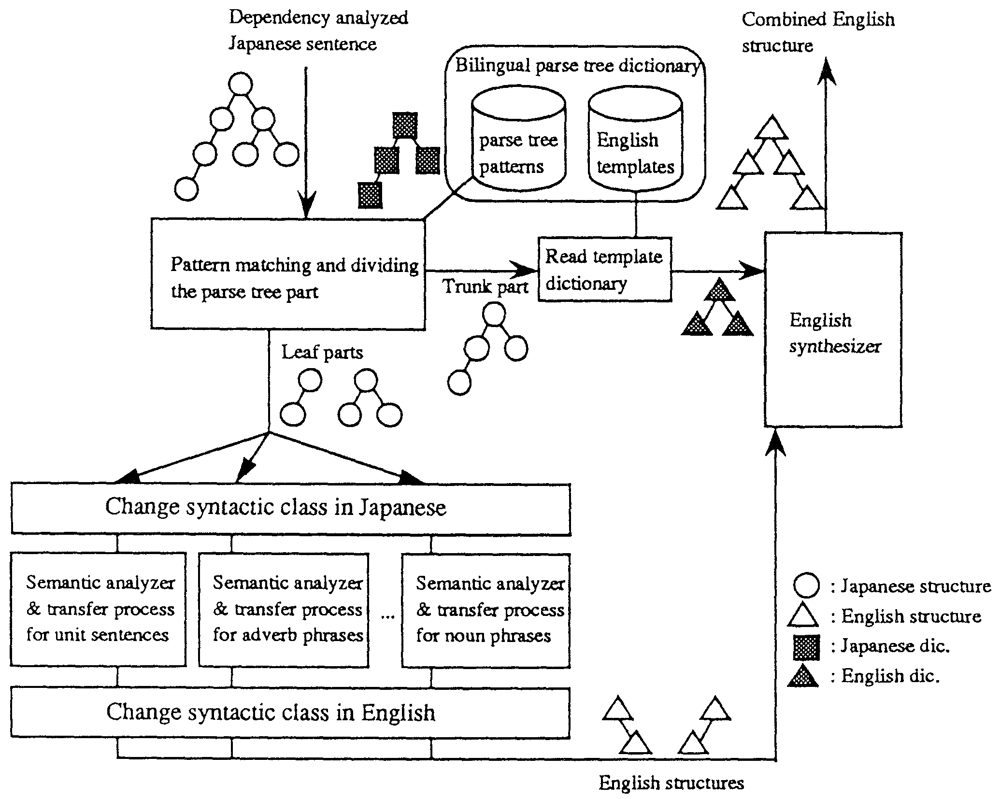

<html>
<head>
<title>Yoshihiro Matsuo, Satoshi Shirai &amp; Satoru Ikehara, NLPRS '95, December 4-7, 1995</title>
<meta http-equiv="content-type" content="text/html; charset=latin-1">
</head>

<body bgcolor=#ffffff link=#0000ff vlink=#0000ff alink=#0000ff>

<div align=center>
<font size=+3>Changing Syntactic Classes in transfer-based Machine Translation</font>
<br><br>

<font size=+2>Yoshihiro Matsuo, Satoshi Shirai and Satoru Ikehara</font>
<br><br>
<font size=+1>NTT Communication Science Laboratories</font>
<br>
<font size=+1>1-2356 Take, Yokosuka-shi, Kanagawa, 238-03 JAPAN</font>
<br>
<font size=+1><tt> {yosihiro,shirai,ikehara.}@nttkb.ntt.jp</tt></font>
</div>

<br><br>

<h2>Abstract</h2>
<p>
Many machine translation systems have two problems, (1) they decompose
input sentences too finely and (2) it is difficult to adapt them to a
specific domain.  The direct parse tree translation method has been
proposed as a solution of the above problems. One of the most
important steps in this method is changing the syntactic classes to
obtain high quality translation. In this paper, we discuss advantages
of the direct parse tree translation method, and the mechanism for
changing syntactic classes, an important problem when translating
between very different languages such as Japanese and English.
</p>

<br><br>
 
<div align=center>
<font size=-1>
[ <i>NLPRS '95</i>, Vol.1, pp.432-437 (December, 1995). ]
</font>
</div>

<br><br>
<br><br>

<hr size=2>

<h3>INDEX</h3>
<table border=0 cellpadding=0>
<tr><td rowspan=17>&nbsp;&nbsp;&nbsp;&nbsp;</td>
    <td><a href="c10.html#chap-1">1 Introduction</a></td></tr>
<tr><td><a href="c10.html#chap-2">2 Direct Parse Tree Translation</a></td></tr>
<tr><td>&nbsp;&nbsp;<a href="c10.html#chap-2.1">2.1 Translation process of Direct Parse Tree Translation</a></td></tr>
<tr><td>&nbsp;&nbsp;<a href="c10.html#chap-2.2">2.2 Advantages of the Direct Parse Tree Translation Method</a></td></tr>
<tr><td>&nbsp;&nbsp;&nbsp;&nbsp;<a href="c10.html#chap-2.2.1">2.2.1 High quality translation for Expressions difficult to Translate</a></td></tr>
<tr><td>&nbsp;&nbsp;&nbsp;&nbsp;<a href="c10.html#chap-2.2.2">2.2.2 The Role of Additional Translation Process to Conveniional MT systems</a></td></tr>
<tr><td>&nbsp;&nbsp;&nbsp;&nbsp;<a href="c10.html#chap-2.2.3">2.2.3 Prevention of Undesired Side Effects</a></td></tr>
<tr><td><a href="c10.html#chap-3">3 Changing syntactic classes</a></td></tr>
<tr><td>&nbsp;&nbsp;<a href="c10.html#chap-3.1">3.1 Adverb to Adjective</a></td></tr>
<tr><td>&nbsp;&nbsp;<a href="c10.html#chap-3.2">3.2 Noun to Verb</a></td></tr>
<tr><td>&nbsp;&nbsp;<a href="c10.html#chap-3.3">3.3 Adjective to Adverb</a></td></tr>
<tr><td>&nbsp;&nbsp;<a href="c10.html#chap-3.4">3.4 Verb or Adjective to Noun</a></td></tr>
<tr><td>&nbsp;&nbsp;<a href="c10.html#chap-3.5">3.5 Clause to Phrase</a></td></tr>
<tr><td><a href="c10.html#chap-4">4 Translation Examples</a></td></tr>
<tr><td><a href="c10.html#chap-5">5 Conclusion</a></td></tr>
<tr></tr>
<tr><td>&nbsp;&nbsp;<a href="c10.html#ref">References</a></td></tr>
</table>

<br><br>

<hr size=2>

<a name="chap-1"><h2><font color=#ff0000>1 Introduction</font></h2></a>

<p>
Many machine translation systems use the transfer method. Most of
these are designed based on the principle of compositional semantics,
where an input sentence is decomposed into many components such as
noun phrases, verb phrases, adverbial phrases, and so on Each
component is translated into the expressions of the target language
independently and finally recombined into a sentence in the target
language. However this method fails when individually translated
components do not combine to form a correct sentence in the target
language. In the case of translations between very different languages
such as Japanese and English, it is very difficult to achieve high
quality by this translation method.
</p>
<p>
In addition, these machine translation systems are usually composed of
many translation phases such as morphological analysis, syntactic
analysis, transfer process and target language generation.  This
separation of the translation processes complicates tuning a machine
translation system to a specific domain because of the many
distributed processes to be modified.
</p>
<p>
In order to solve these problems, we have proposed the direct parse
tree translation method which matches patterns between dependency
analyzed Japanese input sentence and parse tree patterns in a
dictionary (<a href="c10.html#ref3">Matsuo et al., 1994</a>) The method
comprises of three phases. First the part of the parse tree of an
input sentence which matches the pattern is transfered into the
framework of the target language. Second the leaf components separated
from the framework are translated into the target language ready to be
combined into the previously translated framework Finally these
components are recombined with the translated framework.
</p>
<p>
One of the most important steps in this method is changing the
syntactic classes (parts of speech) in the second process. To
translate smoothly from one language to another it is often necessary
to change the syntactic classes of elements.
</p>
<p>
In this paper, we discuss advantages of the direct parse tree
translation method (in section 2), and the mechanism for changing
syntactic classes (in section 3).
</p>

<br><br>

<hr size=2>

<a name="chap-2"><h2><font color=#ff0000>2 Direct Parse Tree Translation</font></h2></a>

<br><br>

<hr size=2>

<a name="chap-2.1"><h2><font color=#ff0000>2.1 Translation process of Direct Parse Tree Translation</font></h2></a>

<p>
Recently, the direct parse tree translation method (<a
href="c10.html#ref3">Matsuo et al., 1994</a>) has been proposed as a method to
translate sentences which are difficult to translate literally. This
method directly translates parse tree structures into largely changed
target language structures without decomposition of the input
sentences. This method works with a traditional transfer-based
translation system based on compositional semantics, bypassing the
normal translation process. Figure 1 shows the translation process of
the direct parse tree translation method applied to a Japanese to
English machine translation system.
</p>

<p>
<table border=3 cellpadding=1 cellspacing=1 align=center>
<tr valign=top><td>

</td></tr>
</table>
<div align=center><strong>
Figure 1: Translation process of Direct Parse Tree Translation
</strong></div>
</p>

<p>
The translation is conducted as follows,
</p>
<p>
<ol>
<li> Translation pairs which have very different structures between
	source and target language are previously prepared by hand in
	bilingual parse tree dictionary.
	<br><br>
<li> The pattern matching part receives a dependency analyzed Japanese
	sentence and compares it with the Japanese parse tree patterns
	described in the Japanese parse tree dictionary.
	<br><br>
<li> If the pattern matches the input tree, the parse tree dividing
	part divide the tree into a 'trunk part' and some 'leaf
	parts'.
	<br><br>
<li> For the trunk part, since the scattered information is already
	captured, no further deep analysis is required. The system
	merely uses the English template which corresponds to the
	pattern from the Japanese parse tree dictionary.
	<br><br>
<li> For each leaf part, the system invokes the relevant semantic
	analyzer and transfer process needed to generate the English
	structures.  The syntactic classes of leaves are changed when
	necessary (see section 3).
	<br><br>
<li> The English synthesizer receives the English template read from
	the English template dictionary and the English structures
	generated by the transfer process, and combines them into a
	complete English sentence.
</ol>
</p>

<br><br>

<hr size=2>

<a name="chap-2.2"><h2><font color=#ff0000>2.2 Advantages of the Direct Parse Tree Translation Method</font></h2></a>

<p>
This translation system has the following advantages:
</p>
<p>
<ul>
<li> High quality translation can be performed for large-size parse
	tree structures which are difficult to translate with
	conventional methods
	<br><br>
<li> It works as an additional translation process to the conventional
	machine translation systems, so that it is convenient for
	building a domain specific translation system.
	<br><br>
<li> Application conditions of rules can be defined precisely so that
	undesired side effect can be avoided.
</ul>
</p>
<p>
The following sections describe these advantages.
</p>

<br><br>

<hr size=2>

<a name="chap-2.2.1"><h2><font color=#ff0000>2.2.1 High quality translation for Expressions difficult to Translate</font></h2></a>

<p>
In a conventional machine translation system, an input sentence is
decomposed into simple structures, such as noun phrases or unit
sentences<a name="rfn1" href="c10.html#fn1"><sup>1</sup></a>, which are
recombined the translations of each structure into a target language
sentence. This feature may sometimes cause unexpected and unlikely
decomposition of input sentences for good translation. Once
decomposed, this translation method does not have an appropriate way
to combine these unexpectedly decomposed small structures, and will
produce the translation with the same parse tree structure as the
input sentence.
</p>
<p>
To avoid such unexpected decomposition, the rules in the direct parse
tree translation method are applied to arbitrary parts of the parse
tree of a whole sentence. These rules can capture a large enough part
of the parse tree, which represents the semantic units for both the
source and target languages.
</p>
<p>
Thus high quality translation can be performed for expressions
difficult to translate with conventional machine translation systems
</p>

<br><br>

<hr size=2>

<a name="chap-2.2.2"><h2><font color=#ff0000>2.2.2 The Role of Additional Translation Process to Conveniional MT systems</font></h2></a>

<p>
In the conventional machine translation systems, the translation
process is separated into several phases, such as morphological
analysis, syntactic analysis, semantic analysis, transfer, generation
processes. Therefore, even if new translation conditions for some
expressions are found, it is difficult to introduce them into the
existing machine translator, because there are a lot of modules to be
improved.
</p>
<p>
For example, in the translation of documents for a specific domain, it
is sometimes necessary to add a new feature of modality, tune the
semantic attribute propagation rule in noun phrase analyzer, or add a
new transfer rule, and so on.
</p>
<p>
This feature can be a disadvantage to adapt the machine translation
system into some specific domain.
</p>
<p>
The direct parse tree translation method can give the solution to such
requirement, because this method requires only one translation rule to
produce one newly expected translation. The concentration of the
translation rule will decrease the cost to modify the machine
translation systems.
</p>

<br><br>

<hr size=2>

<a name="chap-2.2.3"><h2><font color=#ff0000>2.2.3 Prevention of Undesired Side Effects</font></h2></a>

<p>
Translation rules need to be applied precisely to the aimed
expressions. However, in natural language, the same expression
structure does not always have the same meanings. The same structure
has sometimes different meanings. Then there is a danger that the
translation rules will be applied to unexpected expressions.
</p>
<p>
In the direct parse tree translation method, translation rules can be
written using detailed semantic attributes as well as syntactic
categories.  And the rules are defined with many selective conditions
widely distributed within parse tree. This assures that undesired side
effects will be avoided.
</p>

<br><br>

<hr size=2>

<a name="chap-3"><h2><font color=#ff0000>3 Changing syntactic classes</font></h2></a>

<p>
The direct parse tree translation method translates parse tree
structures into largely changed target parse tree
structures. Therefore, the leaf parts cut out from the source language
parse tree should sometimes be translated into different syntactic
classes.
</p>
<p>
Especially in Japanese to English translation system, verbal phrases
sometimes need to be transformed into noun phrases.
</p>
<p>
It is said that Japanese uses a higher proportion of verbs and English
a higher proportion of nouns when compared to each other (<a
href="c10.html#ref1">Ando, 1986</a>). This feature of these languages requires
the mechanism to change the syntactic classes of Japanese verbs into
English nouns and to transform Japanese clauses into English phrases
such as noun phrases
</p>
<p>
These transformations are not always possible and are not always
adequate. For example, it will be unacceptable if an complex
subordinate clause is changed into a noun phrase. In the system shown
in Figure 1, when there is a leaf that is difficult to transform,
conventional machine translation method can undertake whole sentence
translation. Therefore, it is not necessary to transform every
expression and we have designed the syntactic class changer without
forcible transformation.
</p>
<p>
To implement these transformations, the transformation process changes
either the source language structure or the target language structure.
Often the transformation can be carried out in either language. The
direct parse tree translation method has transformation processes for
both source and target language structures, and which is performed
depends on the kind of transformation and the input sentence (Figure
1).
</p>
<p>
Several transformations are described in the following sections.
</p>

<br><br>

<hr size=2>

<a name="chap-3.1"><h2><font color=#ff0000>3.1 Adverb to Adjective</font></h2></a>

<p>
When Japanese verb phrases are translated into English noun phrases,
Japanese adverbs need to be changed into adjectives in
English. Besides the translation of these phrases, there are many
cases that Japanese expressions corresponding to English complement
adjectives are expressed by adverbs. For example, "paint $B!A(B blue"
corresponds to the Japanese expression $B!A(B<i>-o aoku nuru</i> '$B!A(B-
<sub>OBJ</sub> blue paint' where the <i>aoku</i> is an adverb
modifying the verb <i>nuru</i>.
</p>
<p>
In this case, the syntactic class of <i>aoku</i> 'bluely', an adverb
need to be changed into an adjective <i>aoi</i> 'blue'. However, in
changing an adverb to an adjective, there are sometimes no English
adverbs corresponding to Japanese adverb. Therefore, the system tries
to change its syntactic class in Japanese by conjugating the Japanese
word if possible, and uses the adjective translator. If changing the
classes within Japanese expressions is impossible, the system uses the
adverb translator and tries to change syntactic class of the
translation in English structure. If both attempts fail, the whole
sentence will be translated by conventional transfer methods.
</p>

<p>
<table border=3 cellpadding=1 cellspacing=1 align=center>
<tr valign=top><td>
<table border=0 cellpadding=1 cellspacing=1 align=center>
<tr valign=top><td>
<tr><td><tt>(</tt></td><td><tt>A</tt></td><td colspan=2><tt>"nuru"</tt></td></tr>
<tr><td></td><td></td>
    <td colspan=2><tt>(B noun-phrase :particle ("wa" "ga") )</tt></td></tr>
<tr><td></td><td></td><td colspan=2><tt>(C noun-phrase :particle "o")</tt></td></tr>
<tr><td></td><td></td><td colspan=2><tt>(D adverbial-phrase :sem color) )</tt></td></tr>
<tr><td><tt>(</tt></td><td colspan=2><tt>(SUBJ</tt></td><td><tt>B)</tt></td></tr>
<tr><td></td><td colspan=2><tt>(VP</tt></td><td><tt>"paint")</tt></td></tr>
<tr><td></td><td colspan=2><tt>(OBJ</tt></td><td><tt>C)</tt></td></tr>
<tr><td></td><td colspan=2><tt>(CO</tt></td><td><tt>D :ADJ) )</tt></td></tr>
</table>
</td></tr>
</table>
<div align=center><strong>
Figure 2: Outline of bilingual rule (adverb to adjective)
</strong></div>
</p>

<br><br>

<hr size=2>

<a name="chap-3.2"><h2><font color=#ff0000>3.2 Noun to Verb</font></h2></a>

<p>
When translating a Japanese functional verb such as <i>okonau</i> 'do'
or <i>suru</i> 'do' which has an action noun on its <i>o</i>-case, it
is sometimes preferable to use the action noun as a verb (<a
href="c10.html#ref4">Oku, 1990</a>). In this case, the mechanism to transform
the action noun into a verb is required. For example, the translation
of <i>kent.ANt-o okonau</i> 'examination-<sub>OBJ</sub> do' into
"examine" requires the transformation from the Japanese noun
<i>kentNt</i> into the English verb "examine" (Figure 3). When the noun
is a derivative of a Japanese nominal verb (<i>sahen-meishi</i> ), the
system changes the noun to the verb within Japanese expression and
translates it into English. Otherwise, the system translates the
Japanese noun into an English noun and then looks up the verb
derivative of the English noun in the English dictionary
</p>

<br><br>

<hr size=2>

<a name="chap-3.3"><h2><font color=#ff0000>3.3 Adjective to Adverb</font></h2></a>

<p>
In the process shown in the previous section, Japanese nouns are
translated into English verbs.  Accompanied this process, the
modifiers of the Japanese nouns, namely adjectives, need to be changed
into adverbs in English. For example, the translation of <i>shousaina
kentNt-o okonau</i> (detailed examination-<sub>OBJ</sub> do' into
"examine in detail", requires a syntactic class change from nominal
adjective <i>shousaina</i> to the prepositional phrase "in detail", an
adverbial phrase (Figure 3).
</p>

<p>
<table border=3 cellpadding=1 cellspacing=1 align=center>
<tr valign=top><td>
<table border=0 cellpadding=1 cellspacing=1 align=center>
<tr><td><tt>(</tt></td><td><tt>A</tt></td><td colspan=3><tt>"okonau"</tt></td></tr>
<tr><td></td><td></td><td><tt>(B</tt></td>
    <td colspan=2><tt>noun-phrase :particle ("wa" "ga") )</tt></td></tr>
<tr><td></td><td></td><td><tt>(C</tt></td>
    <td colspan=2><tt>noun-phrase :particle "o"</tt></td></tr>
<tr><td></td><td></td><td></td>
    <td colspan=2><tt>(D noun-phrase :particle "no")</tt></td></tr>
<tr><td></td><td></td><td></td><td colspan=2><tt>(E adjective-phraae) ) )</tt></td></tr>
<tr><td><tt>(</tt></td><td colspan=3><tt>(SUBJ</tt></td><td><tt>B)</tt></td></tr>
<tr><td></td><td colspan=3><tt>(VP</tt></td><td><tt>C :VERB)</tt></td></tr>
<tr><td></td><td colspan=3><tt>(OBJ</tt></td><td><tt>D)</tt></td></tr>
<tr><td></td><td colspan=3><tt>(ADVP</tt></td><td><tt>E :ADV) )</tt></td></tr>
</table>
</td></tr>
</table>
<div align=center><strong>
Figure 3: Outline of bilingual rule (noun to verb and adjective to adverb)
</strong></div>
</p>

<br><br>

<hr size=2>

<a name="chap-3.4"><h2><font color=#ff0000>3.4 Verb or Adjective to Noun</font></h2></a>

<p>
The transformation from clauses to phrases which is mentioned in the
following sections requires the transformation from verbs or
adjectives to nouns.  The system uses noun derivatives of the English
obtained with conventional translation method.
</p>

<br><br>

<hr size=2>

<a name="chap-3.5"><h2><font color=#ff0000>3.5 Clause to Phrase</font></h2></a>

<p>
We have showed transformations from one phrase to another phrase with
different syntactic classes in the above sections. There are more
complicated cases which require syntactic class changes.  In Japanese
to English translation, changes from subordinate clause to noun
phrase, gerundial phrase or infinitive are especially required. We
will show only the transformation of clauses to noun phrases.
</p>
<p>
The direct parse tree translation method is currently equipped with 52
transform rules to transform clauses to noun phrases which are
categorized with sentence patterns, kind of case element, kind of
modifier, kind of verb, etc. Each rule uses the primitive transform
mechanism described in the above sections. For example, applying the
rule in Figure 4 to <i>nioi-ga tsuyokat-ta-node kare-wa mezame-ta</i>
'smell-<sub>SUBJ</sub> strong-<sub>PAST</sub>-<sub>CAUSE</sub>
he-<sub>SUBJ</sub> wake-<sub>PAST</sub>' into "strong smell", and "The
strong smell woke him up" is obtained.
</p>

<p>
<table border=3 cellpadding=1 cellspacing=1 align=center>
<tr valign=top><td>
<table border=0 cellpadding=1 cellspacing=1 align=center>
<tr><td><tt>(</tt></td><td><tt>A</tt></td><td colspan=2><tt>"mezameru"</tt></td></tr>
<tr><td></td><td></td>
    <td colspan=2><tt>(B noun-phrase :partticle ("wa" "ga"))</tt></td></tr>
<tr><td></td><td></td>
    <td colspan=2><tt>(C subordinate-clause :particle "node "))</tt></td></tr>
<tr><td><tt>(</tt></td><td colspan=2><tt>(SUBJ</tt></td><td><tt>C :NP)</tt></td></tr>
<tr><td></td><td colspan=2><tt>(VP</tt></td><td><tt>"wake")</tt></td></tr>
<tr><td></td><td colspan=2><tt>(OBJ</tt></td><td><tt>B)</tt></td></tr>
<tr><td></td><td colspan=2><tt>(ADV</tt></td><td><tt>"up"))</tt></td></tr>
</table>
</td></tr>
</table>
<div align=center><strong>
Figure 4: Outline of bilingual rule (clause to noun-phrase 1)
</strong></div>
</p>

<p>
Some exceptional transformation which cannot be achieved by the a
priori rules of the direct parse tree translation method can be
described with the bilingual rule of the direct parse tree translation
method. For example, to obtain "The bell woke me up" as the
translation of <i>kane-ga nat-ta-node mezame-ta</i>
'bell-<sub>SUBJ</sub> ring-<sub>PAST</sub>-<sub>CAUSE</sub>
wake-<sub>PAST</sub>' the bilingual rule in Figure 5 can be used.
</p>

<p>
<table border=3 cellpadding=1 cellspacing=1 align=center>
<tr valign=top><td>
<table border=0 cellpadding=1 cellspacing=1 align=center>
<tr><td><tt>(</tt></td><td><tt>A</tt></td><td colspan=3><tt>"mezameru"</tt></td></tr>
<tr><td></td><td></td><td><tt>(B</tt></td>
    <td colspan=2><tt>noun-phrase :particle ("wa" "ga") )</tt></td></tr>
<tr><td></td><td></td><td><tt>(C</tt></td>
    <td colspan=2><tt>"naru" :particle "node"</tt></td></tr>
<tr><td></td><td></td><td></td>
    <td colspan=2><tt>(D noun-phrase :particle "ga") ) )</tt></td></tr>
<tr><td><tt>(</tt></td><td colspan=3><tt>(SUBJ</tt></td><td><tt>D)</tt></td></tr>
<tr><td></td><td colspan=3><tt>(VP</tt></td><td><tt>"wake")</tt></td></tr>
<tr><td></td><td colspan=3><tt>(OBJ</tt></td><td><tt>B)</tt></td></tr>
<tr><td></td><td colspan=3><tt>(ADV</tt></td><td><tt>"up") )</tt></td></tr>
</table>
</td></tr>
</table>
<div align=center><strong>
Figure 5. Outline of bilingual rule (clause to noun-phrase 2)
</strong></div>
</p>

<br><br>

<hr size=2>

<a name="chap-4"><h2><font color=#ff0000>4 Translation Examples</font></h2></a>

<p>
The direct parse tree translation method has been implemented into the
Japanese to English machine translation system ALT-J/E and the
syntactic class transformation processes were also realized. Some
translation examples using the direct parse tree translation method
with changing syntactic classes are shown in Table 1. From these
results, it can be seen that, compafed with the conventional
translation methods, the translation quality can be very much improved
by the direct parse tree translation method.
</p>

<p>
<table border=3 cellpadding=1 cellspacing=1 align=center>
<tr align=center><td><i>Japanese</i><br>Gloss</td>
    <td>Result with the direet parse tree translation<br>
	Result without the direct parse tree translation</td>
    <td>Syntactic classes change</td></tr>
<tr></tr>
<tr><td><table border=0 cellpadding=1 cellspacing=1>
	<tr align=center><td><i>watashi-wa</i></td><td><i>hon-o</i></td>
	    <td><i><u>sukoshi</u></i></td><td><i>kat-ta</i>.</td></tr>
	<tr align=center><td>I</td><td>book</td><td>slightly</td><td>buy</td></tr>
	</table>
    </td>
    <td>I bought <i>a few</i> books.<br>I <i>slightly</u> bought a book.</td>
    <td align=center>adverb to adjective</td></tr>
<tr><td><table border=0 cellpadding=1 cellspacing=1>
	<tr align=center><td><i>amerika-wa</i></td><td><i>jidNtsya-</i></td>
	    <td><i>yunyu-no</i></td><td><i><u>kinshi</u>-o</i></td>
	    <td><nobr><i>kime-ta</i>.</nobr></td></tr>
	<tr align=center><td>America</td><td>car</td>
	    <td>import</td><td>prohibition</td><td>decide</td></tr>
	</table>
    </td>
    <td>The United States decided to <u>prohibit</u> the import of car.<br>
	The United States decided on the <u>prohibition</u> of the import of car.</td>
    <td align=center>noun to verb</td></tr>
<tr><td><table border=0 cellpadding=1 cellspacing=1>
	<tr align=center><td>$B!A(B</td><td><i><u>shNtsaina</u></i></td>
	    <td><i>kentNt-o</i></td><td><i>okonau.</i></td></tr>
	<tr align=center><td></td><td>detailed</td><td>examination</td><td>do</td></tr>
	</table>
    </td>
    <td>$B!A(B examine <u>in detail</u>.<br>$B!A(B do a <u>detailed</u> examination.</td>
    <td align=center>adjective to adverb</td></tr>
<tr><td><table border=0 cellpadding=1 cellspacing=1>
	<tr align=center><td><i>kare-wa</i></td><td><i>jNtzuni</i></td>
	    <td><i><u>oyogeru</u>.</i></td></tr>
	<tr align=center><td>he</td><td>well</td><td>can swim</td></tr>
	</table>
    </td>
    <td>He is good at <u>swimming</u>.<br>He can <u>swim</u> well.</td>
    <td align=center>verb to noun</td></tr>
<tr><td><table border=0 cellpadding=1 cellspacing=1>
	<tr align=center><td><i><u>yNtsumi-kibun-ga</u></i></td>
	    <td><i><u>tsuyoi</u></i></td><td><i>naka</i></td><td>$B!A(B.</td></tr>
	<tr align=center><td>wait-and-see</td><td>mood</td>
	    <td>strong</td><td>center)</td></tr>
	</table>
    </td>
    <td>$B!A(B under <u>the strong wait-and-see mood</u>.
	<br>$B!A(B in <u>that wait-and-see mood is strong</u>.</td>
    <td align=center>clause to phrase</td></tr>
</table>
<div align=center><strong>
Table 1 : Translation Examples
</strong></div>
</p>

<br><br>

<hr size=2>

<a name="chap-5"><h2><font color=#ff0000>5 Conclusion</font></h2></a>

<p>
This paper showed three advantages of the direct parse tree
translation method ; (1) High quality translation can be performed for
large-size parse tree's structures which are difficult to translate
with conventional method ; (2) It works as an additional translation
process to the conventional machine translation systems, so that it is
very useful to build a domain specific translation system; (3)
Transformation rule can be defined very precisely, then undesired side
effects are prevented. In order to realize this method, it pointed out
the necessity of 5 kinds of leaf translations which require syntactic
class changes and showed how to implement these functions into
existing machine translation systems. Currently the direct parse tree
translation method was implemented in Japanese to English machine
translation system, ALT-J/E (<a href="c10.html#ref2">Ikehara, 1989</a>) and
translation rules are going to be collected. Our next study will be
the evaluation of improvements in translation quality.
</p>

<br><br>

<hr size=2>

<a name="ref"><h2><font color=#ff0000>References</font></h2></a>

<p>
<dl compact>
<dt><a name="ref1">Ando, S. (1986).</a>
<dd><i>Eigo-no Ronri Nihongo-no Ronri (English Logic and Japanese Logic)</i>.
	Taishukan Shoten. (in Japanese).
	<br><br>
<dt><a name="ref2">Ikehara, S. (1989).</a>
<dd>Multi-Ievel Machine Translation Method.
	<i>Future Computing Systems</i>, 2(3).
	<br><br>
<dt><a name="ref3">Matsuo, Y, Shirai, S, Yokoo, A, and Ikehara, S. (1994).</a>
<dd>Direct Parse Tree Translation in cooperation with the Transfer Method.
	In <i>Proceedings of International Conference on New Methods in Language
	Processing (NeMLaP)</i>, Manchester.
	<br><br>
<dt><a name="ref4">Oku, M. (1990).</a>
<dd>A Method for Analyzing Japanese Idioms.
	In <i>Proceedings of Seoul International Conference on Natural Language
	Processing (SICONLP/90)</i>, Seoul.
</dl>

<br><br>

<hr size=2>

<br>

<font color=#ff0000><strong>Footnote</strong></font>

<hr size=2 width=40% align=left>

<a name="fn1"><sup>1</sup></a>
A unit sentence is made up of a verb and case elements. (<a href="c10.html#rfn1">Return</a>)

<br><br><br><br><br><br><br><br><br><br>
<br><br><br><br><br><br><br><br><br><br>
<br><br><br><br><br><br><br><br><br><br>
<br><br><br><br><br><br><br><br><br><br>
<br><br><br><br><br><br><br><br><br><br>

</body>
</html>
